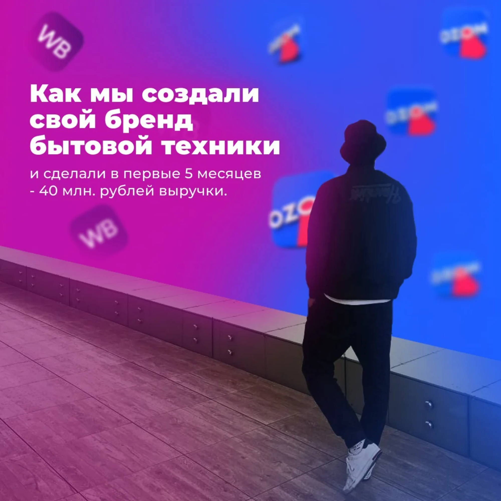
миссия бренда - вывести на рынок товары с уникальным внешним видом, качеством и удобством, при этом по доступной цене.
основные конкуренты: polaris, bork, redmond, kitfort, scarlett
статистику собирали через сервис аналитики маркетплейсов.
общую категорию взяли «бытовая техника», смотрели самые топовые позиции по обороту, количество продавцов с продажами и искали товары со стабильным или растущим трендом.
далее уже шли на китайские платформы и искали эти товары с достойным внешним видом и которых еще нет на российском рынке.
через специальный алгоритм проверок выявляем «первые руки». на китайском рынке очень много ресселеров, но нас интересовали только прямые заводы, чтобы заключить с ними «эксклюзив». тогда этот завод не сможет продавать именно нашу модель другим компаниям на территории россии. через месяц проверок и переговоров мы запускаем производство первой продукции под своим брендом.
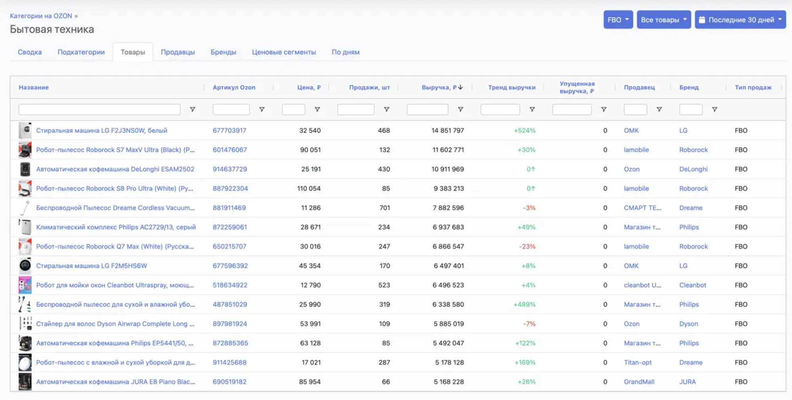
я с самого начала хотел иметь продукт "выше среднего" или даже премиум класса. моим эталоном был bork. поэтому сразу были выбраны 3 основных цвета - белый, черный и серебристый.
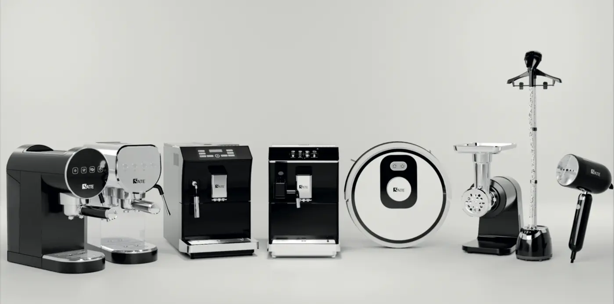
над внешним видом подарочной коробки мы тоже работали около месяца и пришли к единому стилю, который сейчас соблюдается на всей продукции. меняются только рендеры товаров и информация на коробке.
через 10-15 дней после оплаты, завод показывает первый сделанный образец товара в живую, мы согласовываем все правки и продолжаем производство всей партии 500-1000 штук.
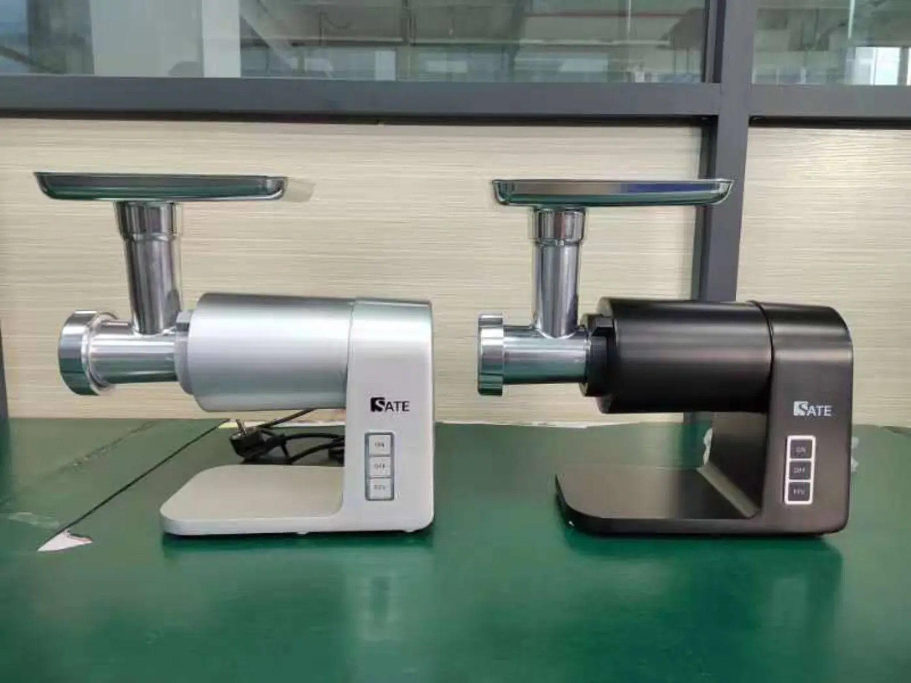
все наши товары строго ввозятся в "белую", поэтому мы оплачиваем пошлину около 6%, еще около 10-15% от стоимости партии уходит на логистику и оплата 20% ндс. параллельно, пока идет производство на заводах, мы сертифицируем наши образцы(100-150 тыс. за одну модель). ввоз в "белую" позволяет нам торговать в крупных сетях, таких как технопарк, ситилинк и dns, но об этом чуть позже. и в перспективе, когда бренд выйдет на крупные обороты, вам 100% прилетит жалоба от конкурентов, если товар ввезен в "серую".
получаем ответ от китайцев, что все товары готовы к отправке и просчитываем логистику. этим занимаются специально обученные логисты и брокеры в нашей команде. я этот процесс полностью делегировал.
логистика всей партии "в белую" занимает около 30 дней, образцы сейчас мы привозим за 5-7 дней.
все товары едут на наш собственный склад, где его пересчитывают, проверяют на внешний брак и дополняют. дополняют? да, перед самым запуском продаж, я дополнил продукт бумажным конвертов софттач, в котором лежит:
гарантийный талон - на все наши товары мы даем гарантию 12 месяцев
купон на следующую покупку - около 3% покупателей его используют, что повышает наш общий оборот.
памятка с историей бренда и просьбой оставить отзыв - очень сильно помогает получать отзывы от клиентов. а на ozon и wb без них - никак.
склад маркируют товар по правилам ozon и wb и на этом заканчивают приемку. чуть позже у нас возникла проблема. китайцы практически всегда упаковывают 2-4 товара в единую транспортированную коробку. это нужно для защиты подарочной коробки от повреждений. проблема заключалась в том, что после покупки товара на ozon, покупателям начали приходить рванные и грязные подарочные коробки, поэтому было принято решение сразу обсуждать с заводами производство 1 к 1. то есть в 1 транспортированную коробку кладут 1 подарочную коробку и не больше. таким образом, мы упростили себе отгрузку на маркетплейсы и теперь клиентам приходит все целое и чистенькое.
первым делом мы зарегистрировали новый магазин и сразу подали документы на верификацию бренда.
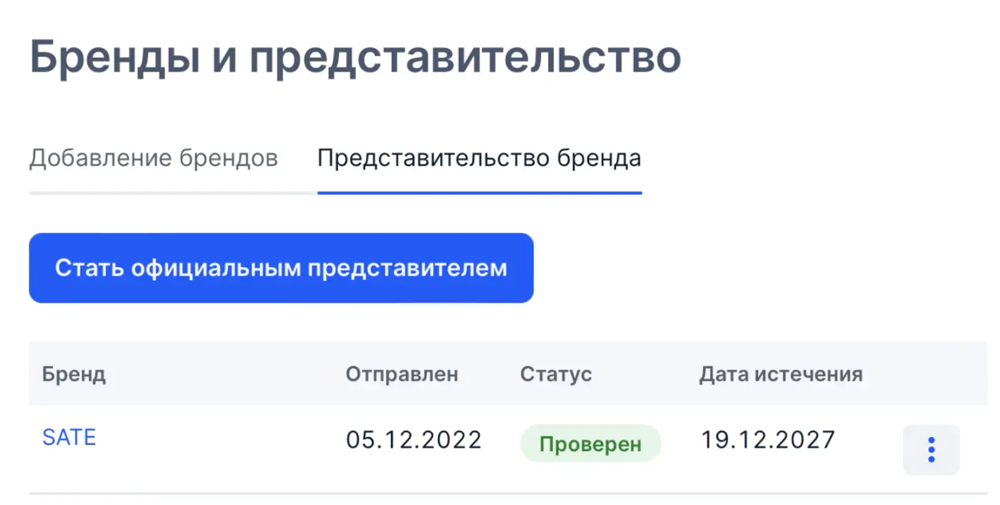
это нужно для контроля в будущем других продавцом на озон, которые будут торговать нашими товарами. у нас открывается доступ к "кабинету бренда". многие даже не знают что он существует, но это действительно нужная вещь для брендов. можно видеть кто и по каким ценам продает ваши товары, отправлять жалобы и контролировать демпинг. отвечать на отзывы у товаров других магазинов.
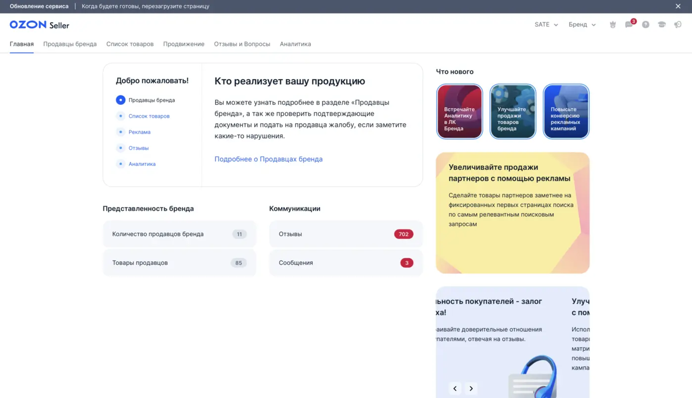
кабинет готов к продажам под своим брендом, пора создавать карточки товаров и правильно их заполнять. инфографику делали в стиле подарочных коробок. только черно-белый стиль и ничего лишнего. на фото постарались описать преимущества товара, его пользу и почему он нужен нашему клиенту.
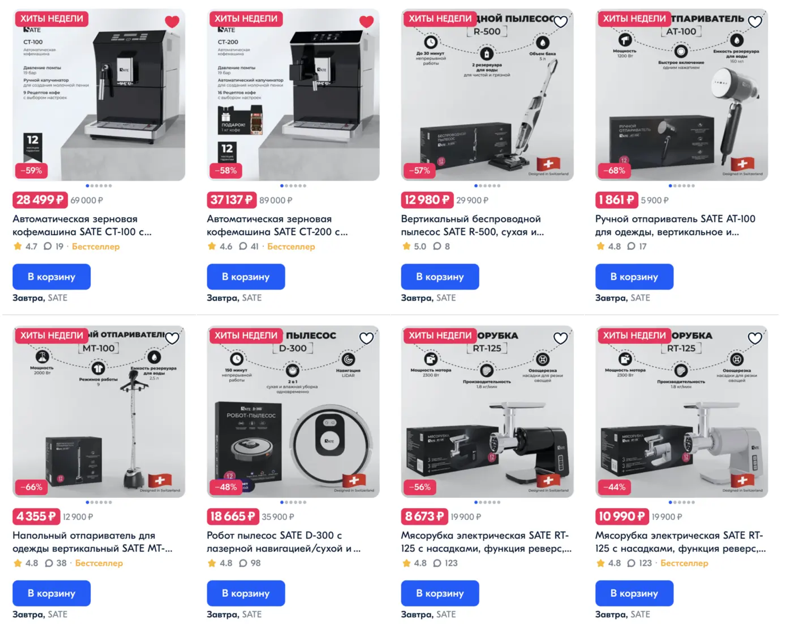
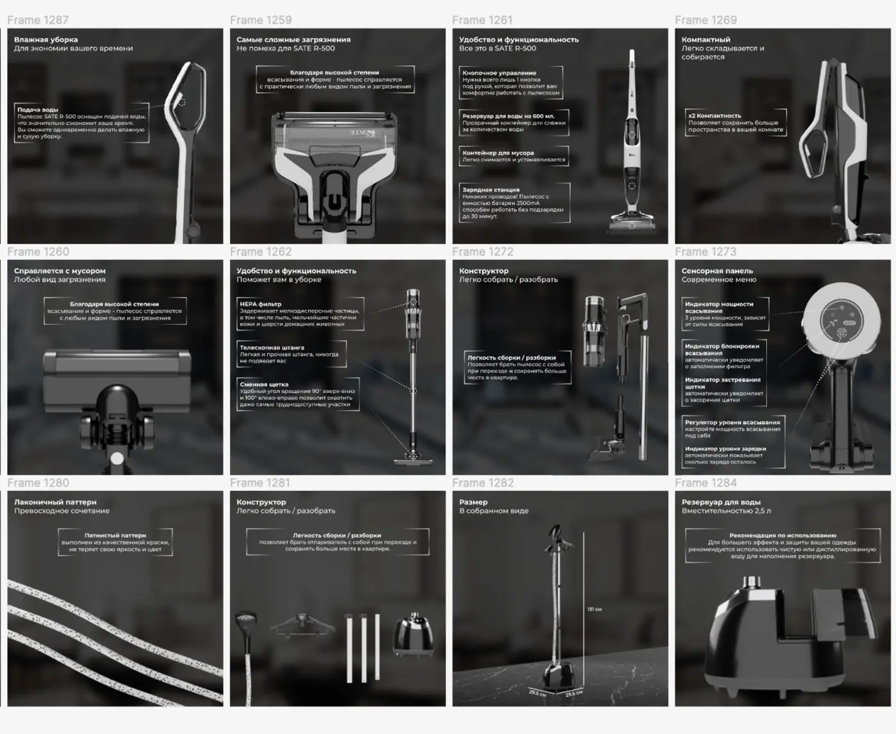
более подробно можно посмотреть тут
огромную роль на выдаче в поиске ozon играет seo. это присутствие ключевых слов в описании товара. ключевые слова мы собираем через специальные сервисы, описание нам придумывает искусственный интелект, после этого его уже проверяет настоящий человек и вносит небольшие правки.
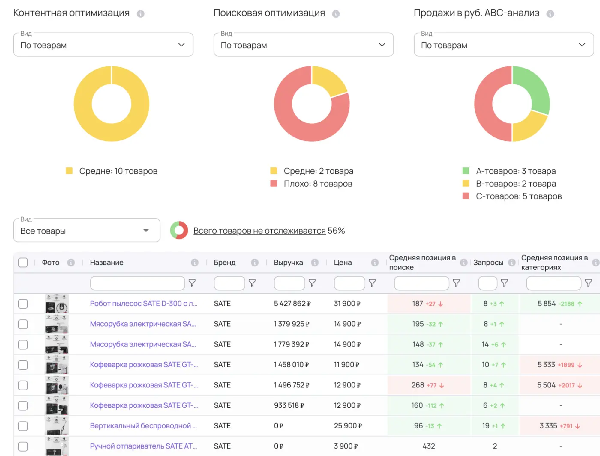
товары найдены и завезены, карточки созданы и готовы. вот он момент, которого мы ждали 6 месяцев. пора переходить к продажам. за 2 года продаж на ozon я нашел оптимальный алгоритм успешного вывода товаров на площадку. используя этот алгоритм, товар на 99% через 2 недели начинает успешно продаваться.
алгоритм полностью раскрывать не буду, его мы и в данный момент применяем на наших клиентах, которые обращаются к нам за ведением их магазинов. поэтому если вы хотите с нашей помощью выйти на ozon - пишите в tg: danyasm.
основная суть заключается в параллельном использовании внутренней рекламы, внешней и самовыкупов. важно все это делать одновременно и правильно.
в работе мы используем автоматизированный сервис по контролю ставок для трафаретов и поиска. его суть заключается в мониторинге аукциона маркетплейса. если ставка понизилась, то сервис автоматически снизит и нашу ставку, таким образом мы экономим время и деньги. ведь аукцион меняется практически каждый час. еще одна фишка этого сервиса, что мы можем задать ставку для 1 позиции в поиске и он будет его постоянно удерживать. если конкуренты захотят нас перегнать и выставить ставку выше, то сервис это увидит и моментально поднимет нашу ставку.
за 5 месяцев на 10 позициях мы сделали 29 млн. выручки в основном магазине бренда и 5.3 млн. в дополнительном магазине
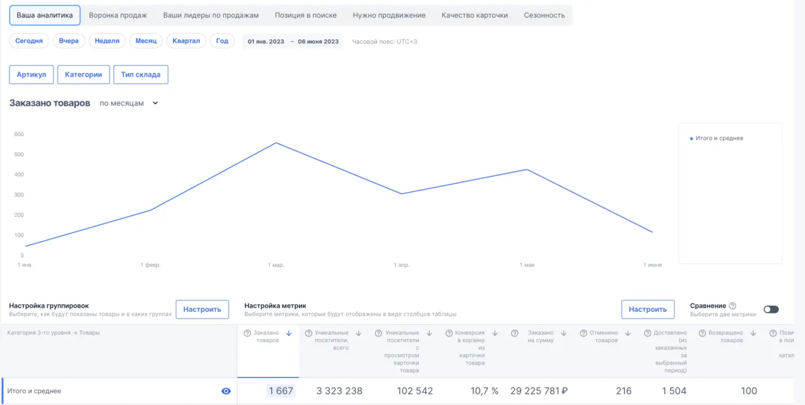
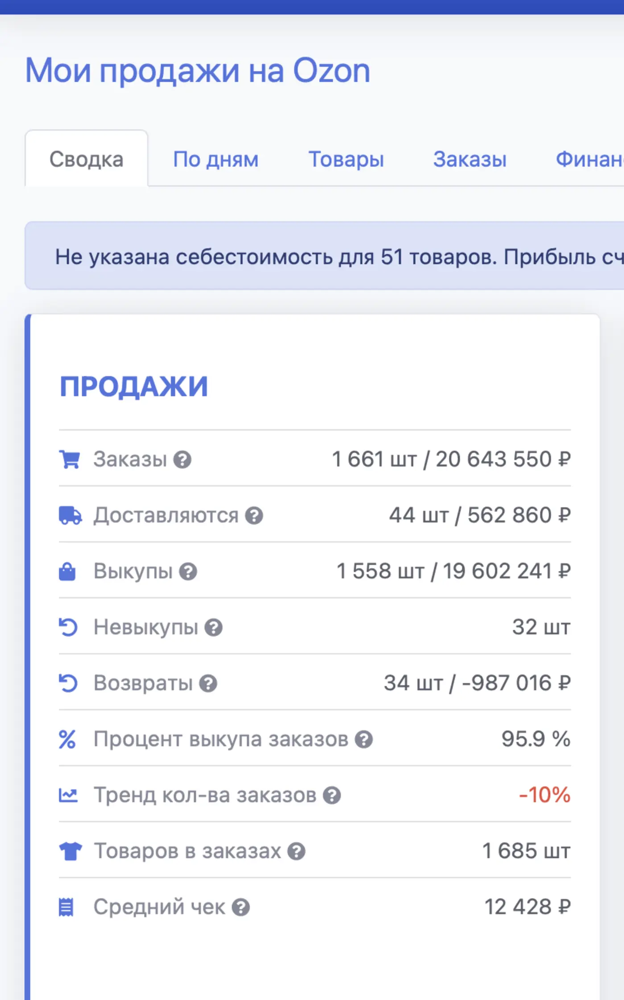
прошу учесть, что сейчас в нашей категории несезон, он начнется осенью и тогда мы сможем увеличить оборот примерно в 2-3 раза.
важная особенность собственных брендов - это присутствие на всех площадках. поэтому мы решили зайти и на wb, но продаж он генерирует значительно меньше. нас это не расстраивает, связано это с тем, что цены на wb значительно выше озоновских(из-за большой скидки от платформы). ozon от себя выдает скидку покупателям на наши товары около 20-25%. поэтому покупатели находят товар на wb, но покупают его на ozon.
за 4 месяца работы wb принес нам 4,5 млн выручки. стоит учесть то, что не все наши товары представлены на wb и некоторые мы загрузили совсем недавно.
любой достойный бренд должен иметь свой собственный сайт интернет-магазин. сразу скажу, что создавали мы его не для продаж, а для увеличения лояльности к бренду. продавать самостоятельно и заниматься логистикой - не так эффективно, как на маркетплейсах. поэтому мы решили завысить цены на сайте, чтобы заказов было минимально. но по статистике посещаемость сайта с каждым днем только увеличивается, а также сайт нужен для "спокойствия" клиентов, которые уже сделали покупку. на сайте они могут найти информации о гарантии и как по ней обратиться, если у них вдруг что-то сломалось.
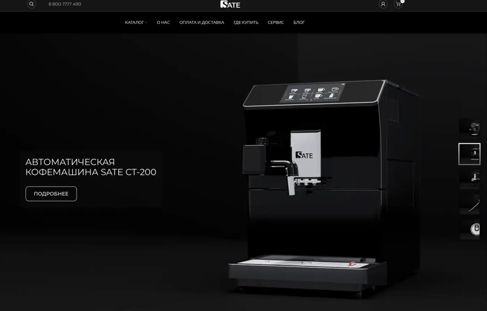
сайт: sate.su
через долгие переговоры нам удалось выйти в технопарк и это огромное достижение для бренда, которому несколько месяцев. сейчас мы стоим на одной полке с гигантами polaris, bork, redmond и другие.
https://leonardo.osnova.io/2db0fd28-c34f-571d-b581-a2b5a0762ad8/-/format/mp4/
так же мы представлены в интернет-магазинах эльдорадо и мвидео
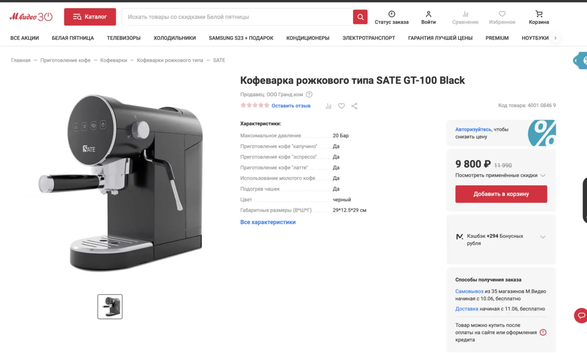
все это благодаря продуктивному общению с менеджерами и качественному товару, которого очень сейчас не хватает на полках оффлайн магазинов после ухода из россии крупных брендов.
бренд sate надежно укрепляется на рынке бытовой техники в россии, благодаря правильному анализу от агентства pride-up. мы быстро и эффективно подобрали товары, которые 100% будут продаваться на маркетплейсах, нашли проверенные фабрики в китае, придумали уникальный дизайн, который выделяется на полке от конкурентов. но самое главное, что за счет выстроенной годами системы выхода на маркетплейсы мы принесли компании 40 млн. выручки на новых товарах и новом бренде.
теперь бренд sate узнает все больше и больше человек, а лояльность к нему только растет. мы продолжаем работу по проекту и в данный момент завозятся новые товары, улучшаются уже завезенные и повышаем продажи на маркетплейсах за счет внедрения новых инструментов.
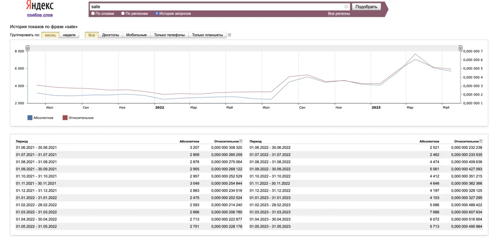
а теперь у вас есть 2 пути, закрыть эту статью или записаться ко мне на бесплатную диагностику, где я вам передам весь свой опыт. если вы хотите уверенно и без проблем зайти на ozon или wb - первым 20 написавшим - бесплатная часовая диагностика, на которой мы определим как ваш товар успешно продавать на ozon и wb. а если товара нет, то я подскажу какие позиции можно сейчас успешно запустить и как их найти и закупить в китае по самым низким ценам.